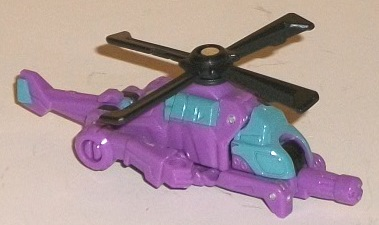
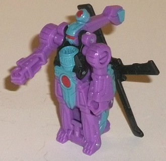
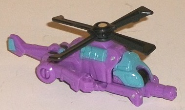
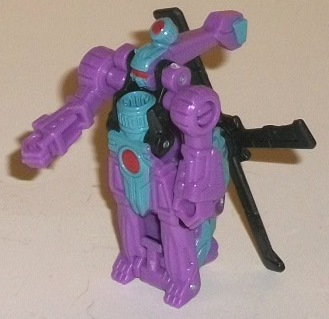
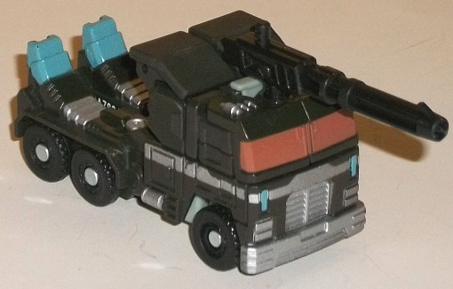
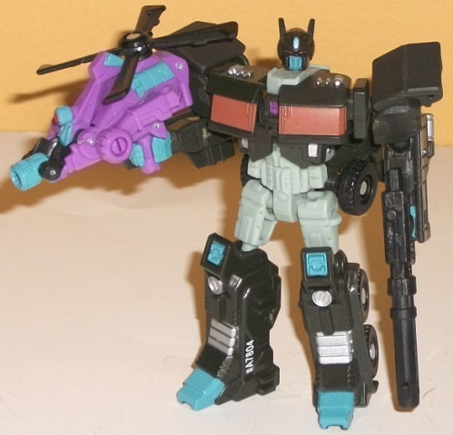

 
Difficulty of Transformations : Very Easy
Color Scheme : Moderately light purple, black, dull milky grayish blue, and some dull dark red
Individual Rating : 5.8
Allegiances
: Decepticon
Size
: Legends 2-pack
(NOTE: Because this set is composed of repaints,
this is not a full-blown review. This mainly covers any changes made to
the set and the color scheme, and merely compares it to the original versions
of these molds. For a review on Blazemaster-- the mold used for Spinister--
go
here
. For a review on Generations Legends
Optimus Prime-- the mold used for Nemesis Prime-- go
here
.)
 Spinister
Spinister


Difficulty of Transformations
: Very
Easy
Color Scheme
: Moderately light purple,
black, dull milky grayish blue, and some dull dark red
Individual Rating
: 5.8
Spinister is a "light"
homage to the G1 character of the same name (who, interestingly enough,
had Targetmaster partners; oh, how the tables have turned, Spinister).
His thoroughly unrealistic color scheme certainly matches his late-'80s
debut, but for this release it's been muted, with the pink being replaced
with purple and the teal being replaced with a much darker, duller grayish
blue. Both colors still go together quite well and stand out on a shelf,
though, and the teal helps him fit in a bit more with Nemesis Prime. Combined
with a few black parts like his chopper blades, Spinister also has a fair
amount of grayish blue paint in both of his modes, so neither looks too
"one-tone"-- something I'm quite grateful for on a toy this tiny. Spinister
also has a few dull dark red paint apps on a few robot parts like his chest
and head visor; it makes for a decent enough accent color, though a lighter
red would have provided Spinister with a "light" color for better contrast.
No mold changes have
been made to Spinister.
 Nemesis
Prime
Nemesis
Prime


Difficulty of Transformation
: Easy
Color Scheme:
Black, light bluish
gray, silver, and some dull milky grayish blue and dull dark red
Individual Rating
: 8.6
Nemesis Prime follows
the tradition of being the "evil" redeco of Optimus Prime with a primarily
black-and-gray color scheme with some teal and red highlights. Nothing
in terms of the general colors is different from the usual, but the shades
of said colors are a little different from normal. The black is... well...
black, so not much to say about that. The gray-- thankfully-- isn't of
the super-blah light milky gray, but the slightly bluish shade of light
gray Nemesis Prime has is still of a rather boring, flat shade, and I wish
it had been speckled with some glitter/metallic shading. It still contrasts
nicely enough with the black, as does the fairly ample amount of silver
paint on Nemesis. The red on this version of Nemesis Prime is considerably
duller than normal, which I'm not a fan of, as it doesn't make the windows
pop visually as much as they should (the eyes still look good, though).
What really "saves" this color scheme is the more-than-usual amount of
teal, though as with the red it's of a duller shade, more of a grayish
blue. Used on the feet, kneecaps, fists, headlights, and the faceplate
all gives a bit more color to those areas beyond the otherwise monochrome
shading of Nemesis Prime and is appreciated-- but it's still of a duller
shade than normal, and a brighter teal would have done the job better.
No mold changes have
been made to Nemesis Prime.
The Nemesis Prime & Spinister set is a nice "evil version" of these molds, both of which are considerably better-than-average for their sizes among the Generations Legends 2-packs. Spinister is quite nice, and sticks out among a shelf in terms of his color scheme (even if it's dulled down a bit from his G1 scheme). Nemesis Prime isn't bad by any means, but the choice to replace his two non-monochrome colors with considerably duller shades makes him lack his usual visual pop. Normally I like Nemesis Prime repaints better than their original Optimus Prime versions, but not in this case because of these duller shades.
Reviews by Beastbot